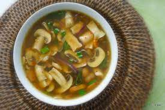

Een simpel soepje is altijd een goed idee voor het kerstdiner. En dit jaar maak je 'm extra goedkoop, maar vooral: extra lekker.
1. Snijd de champignons in dunne plakjes. Snipper de ui, snijd de knoflook fijn
2. Verhit de boter in een soeppan. Bak de ui 2 min. op middelhoog vuur. Voeg de knoflook, champignons en het takje tijm toe en bak 4 min. Schep regelmatig om. Voeg de bouillonblokjes en het water toe.
3. Breng de soep aan de kook en laat 3 min. koken zonder deksel. Verwijder het takje tijm en breng op smaak met peper en eventueel zout.
